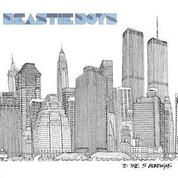

Disco: "To the 5 Boroughs" Año: 2004
De: Beastie Boys
Genero: Hip Hop
Mejores temas: "Triple Trouble" y "Ch-Check it out".
.jpg)
Disco: "Hysteria" Año: 1987
De: Def Leppard
Genero: Hard Rock
Mejores temas: "Pour some sugar on me", "Animal" y "Armageddon it".
Disco: "Appetite for Destruction" Año: 1987
De: Guns N' Roses
Genero: Hard Rock
Mejores temas: "Welcome to the Jungle", "Rocket Queen" y "Out Ta Get Me",

Disco: "Cry Baby" Año: 2015
De: Melanie Martinez
Genero: Alternativo
Mejores temas: "Dollhause", "Pacify Her" y "Alphabet Boy".
Disco: "...And Justice for All" Año: 1988
De: Metallica
Genero: Thrash Metal
Mejores temas: "Eye of the Beholder", "Blackened" y "One".
Disco: "Dr. Feelgood" Año: 1989
De: Mötley Crüe
Genero: Heavy Metal
Mejores temas: "Kickstart My Heart", "Dr. Feelgood" y "Same Ol' Situation (S.O.S.)".
Disco: "Look what the cat dragged in" Año: 1986
De: Poison
Genero: Glam Metal
Mejores temas: "Cry Tough", "Talk Dirty to Me" y "Look what the cat dragged in".

Disco: "Ugly is beatiful" Año: 2020
De: Oliver Tree
Genero: Alternativo
Mejores temas: "Alien Boy", "Hurt" y "Bury Me Alive".
Disco: "Hellbilly Deluxe" Año: 1998
De: Rob Zombie
Genero: Industrial Metal
Mejores temas: "Dragula", "Living Dead Girl" y "Superbeast".
Disco: "Ramones" Año: 1976
De: The Ramones
Genero: Punk Rock
Mejores temas: "Blitzkrieg Bop", "Judy is a Punk" y "I wanna be your boyfriend".

Disco: "Chocolate Starfish and the Hotdog Flavored Water" Año: 2000
De: Limp Bizkit
Genero: Nu Metal
Mejores temas: "My Generation", "My Way" y "Rollin".
Disco: "Screaming for Vengeance" Año: 1982
De: Judas Priest
Genero: Heavy Metal
Mejores temas: "You've Got Another Thing Comin'" "Devil's Child" y "Electric Eye"

Disco: "Willy And The Poor Boys" Año: 1969
De: Creedence Clearwater Revival
Genero: Blues Rock
Mejores temas: "Fortunate Son" "Down On The Corner" y "Midnight Special"
Disco: "Reign in Blood" Año: 1986
De: Slayer
Genero: Thrash Metal
Mejores temas: "Raining Blood" "Angel of Death" y "Altar of Sacrifice"
Disco: "Bezerk" Año: 1990
De: Tigertailz
Genero: Glam Metal
Mejores temas: "Sick Sex" "Love Bomb Baby" y "Noise Level Critical"
Disco: "New Jersey" Año: 1988
De: Bon Jovi
Genero: Hard Rock
Mejores temas: "Bad Medicine" "Lay Your Hand on Me" y "I´ll Be There for You"
Disco: "High Voltage" Año: 1976
De: AC/DC
Genero: Hard Rock
Mejores temas: "T.N.T" "It´s a Long Way to the Top" y "High Voltage"
Disco: "Among the Living" Año: 1987
De: Anthrax
Genero: Thrash Metal
Mejores temas: "Indians" "Caught in a Mosh" y "I am the Law"
Disco: "La Sexorcisto: Devil Music, Vol. 1" Año: 1992
De: White Zombie
Genero: Heavy Metal
Mejores temas: "Thunder Kiss´65" "Welcome to the Planet Motherfucker" y "Black Sunshine"
Disco: "Libertad" Año: 2007
De: Velvet Revolver
Genero: Hard Rock
Mejores temas: "She Builds Quick Machines" "The Last Fight" y "Gravedancer"
Disco: "Destroyer" Año: 1976
De: Kiss
Genero: Hard Rock
Mejores temas: "Detroit Rock City" "God of Thunder" y "Do You Love Me?"
Disco: "Dance and Dense Denso" Año: 2003
De: Molotov
Genero: Latino
Mejores temas: "Frijolero" y "Hit Me"

Disco: "Wake me when It´s over" Año: 1989
De: Faster Pussycat
Genero: Glam Metal
Mejores temas: "Hause of Pain" "Slip of the Tongue" y "Poison Ivy"

Disco: "Greatest Hits" Año: 1992
De: ZZ Top
Genero: Blues Rock
Mejores temas: "Gimme All Your Lovin" "Sharp Dressed Man" y "La Grange"
Disco: "Led Zeppelin IV" Año: 1971
De: Led Zeppelin
Genero: Hard Rock
Mejores temas: "Black Dog" "Rock and Roll" y "Stairway to Heaven"
Disco: "Hair of the Dog" Año: 1975
De: Nazareth
Genero: Hard Rock
Mejores temas: "Love Hurts" y "Hair of the Dog"

Disco: "Part 3" Año: 1976
De: KC & Sunshine Band
Genero: Disco
Mejores temas: "Keep It Comin' Love" "I'm Your Boogie Man" y "(Shake, Shake, Shake) Shake Your Booty"

Disco: "The Hits/The B-Sides" Año: 1993
De: Prince
Genero: Pop
Mejores temas: "When Doves Cry" "Kiss" y "Cream"
Disco: "Bad" Año: 1987
De: Michael Jackson
Genero: Pop
Mejores temas: "Bad", "Smooth Criminal" y "The Way You Make Me Feel"


Disco: "Greatest Hits" Año: 1981
De: Queen
Genero: Hard Rock
Mejores temas: "Bohemiam Rhapsody" "Somebody to Love" y "Crazy Little Thing Called Love"

Disco: "Demon Days" Año: 2005
De: Gorillaz
Genero: Alternativo
Mejores temas: "Feel Good Inc." y "DARE"
Disco: "Delirio" Año: 2007
De: Sinergia
Genero: Latino
Mejores temas: "Jefe" "Niños Araña" y "Te enojai por todo"